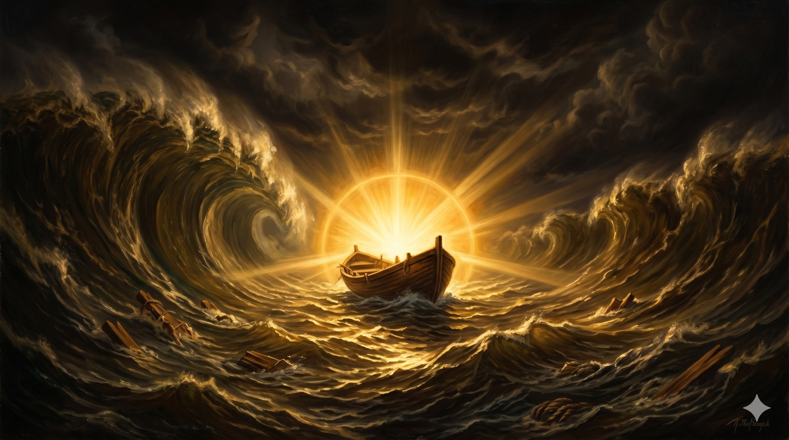

폭풍이 몰아치는 바다 위에서 두 팔을 힘차게 벌리고 하늘을 향해 서 있는 사도 바울 — 바람과 파도가 그를 에워싸고 있지만 그의 표정은 평온하고 확신에 차 있으며, 먹구름 사이로 강렬한 빛 한 줄기가 그의 얼굴을 비춘다
"누가 우리를 그리스도의 사랑에서 끊으리요 환난이나 곤고나 박해나 기근이나 적신이나 위험이나 칼이랴 … 내가 확신하노니 사망이나 생명이나 천사들이나 권세자들이나 현재 일이나 장래 일이나 능력이나 높음이나 깊음이나 다른 어떤 피조물이라도 우리를 우리 주 그리스도 예수 안에 있는 하나님의 사랑에서 끊을 수 없으리라" — 로마서 8:35, 38–39
로마서 8장 마지막 단락은 바울이 평생 경험하고 깨달은 신앙의 정수(精髓)를 담고 있습니다. "그런즉 이 일에 대하여 우리가 무슨 말 하리요 만일 하나님이 우리를 위하시면 누가 우리를 대적하리요" — 이것은 논리의 언어가 아니라 삶에서 건져 올린 고백의 언어입니다. 바울은 환난, 곤고, 박해, 기근, 적신(알몸), 위험, 칼을 열거합니다. 이것들은 그가 직접 겪은 것들입니다(고후 11장). 공허한 위로가 아니라, 그 모든 것을 통과한 사람이 드리는 찬양입니다.
바울은 "사망이나 생명이나, 천사들이나 권세자들이나, 현재 일이나 장래 일이나, 높음이나 깊음이나, 다른 어떤 피조물이라도" — 모든 가능성을 총망라하여 선언합니다. 이 중 어느 것도 우리를 하나님의 사랑에서 끊을 수 없다고. "확신하노니(πέπεισμαι, 페페이스마이)"는 완료형 수동태로, 이미 완전히 설득되어 있는 상태를 뜻합니다. 흔들리거나 망설이는 것이 아니라, 이미 결론에 도달한 사람의 담담한 선언입니다. 바울의 신앙은 상황에 따라 요동치는 감정이 아니라, 이 확신 위에 세워진 반석 같은 것이었습니다.

깊고 넓은 바다 위에 홀로 떠 있는 작은 배 — 주위를 거대한 파도와 어둠이 에워싸고 있지만, 배 안에서는 따뜻하고 강렬한 빛이 솟아오르고 있다. 어떤 피조물도 그 빛을 끌 수 없음을 상징하는 장면
우리는 살아가면서 수많은 상황에 의해 흔들립니다. 건강이 나빠지거나, 사랑하는 사람을 잃거나, 억울한 일을 당하거나, 미래가 보이지 않을 때 우리는 묻습니다. "하나님이 나를 버리신 것은 아닐까?" 바울의 대답은 단호합니다. 아니오. 그 어떤 것도 하나님의 사랑에서 당신을 끊을 수 없습니다. 이것은 감정의 문제가 아니라 사실의 문제입니다.
"우리가 넉넉히 이기느니라(ὑπερνικῶμεν, 휘퍼니코멘)" — 원어는 '압도적으로 이기다', '초과하여 승리하다'는 뜻입니다. 간신히 버티는 것이 아니라 넘치도록 이긴다는 말입니다. 오늘 힘겨운 상황에 있다면, 그 자리에서 로마서 8:37을 천천히 소리 내어 읽어 보십시오. 이 말씀이 당신의 상황보다 더 크다는 것을 느끼게 될 것입니다.
지금 당신의 삶에서 가장 두렵고 힘든 것이 무엇입니까?
그것의 이름을 대십시오 — 그리고 선언하십시오:
"그것도 나를 그리스도의 사랑에서 끊을 수 없다."